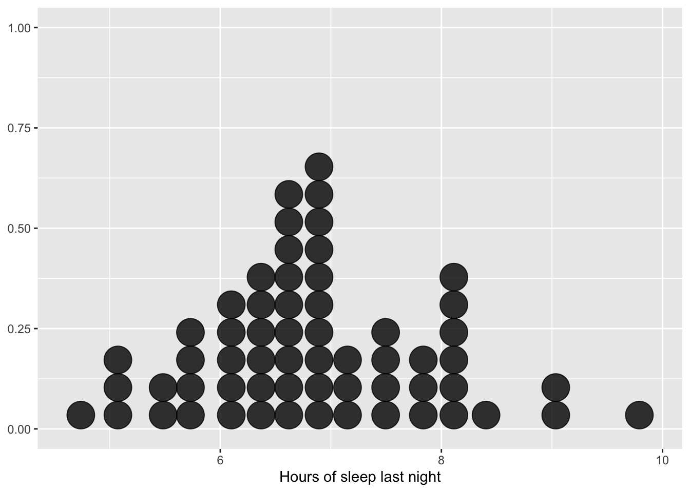
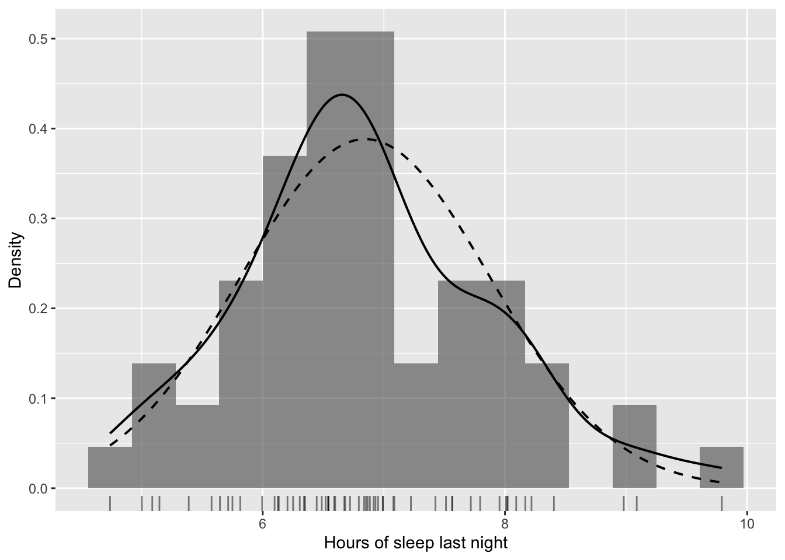
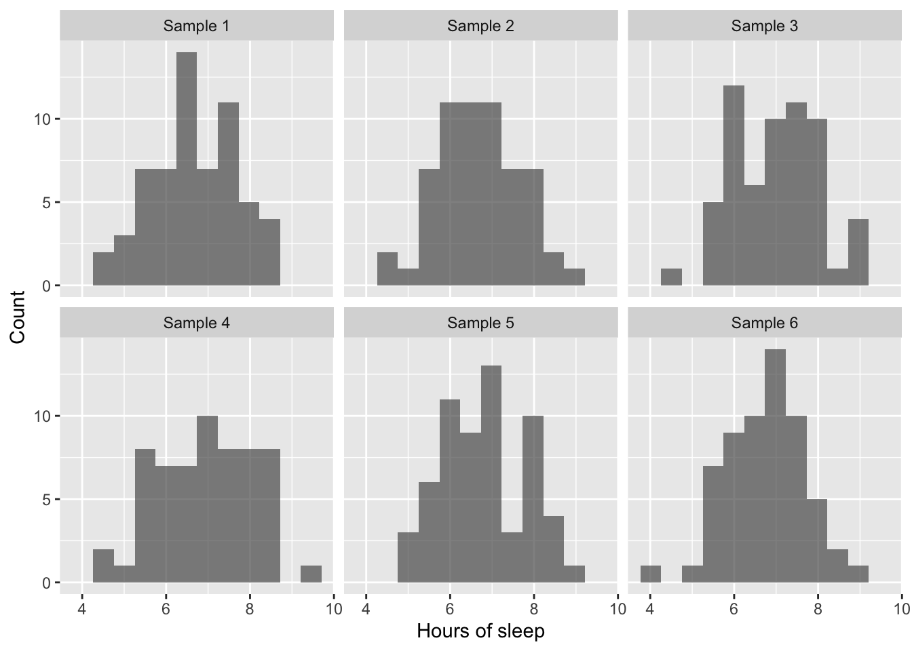
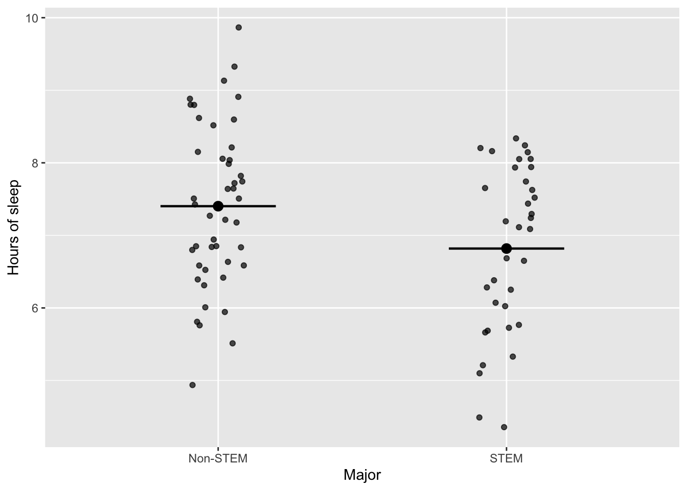
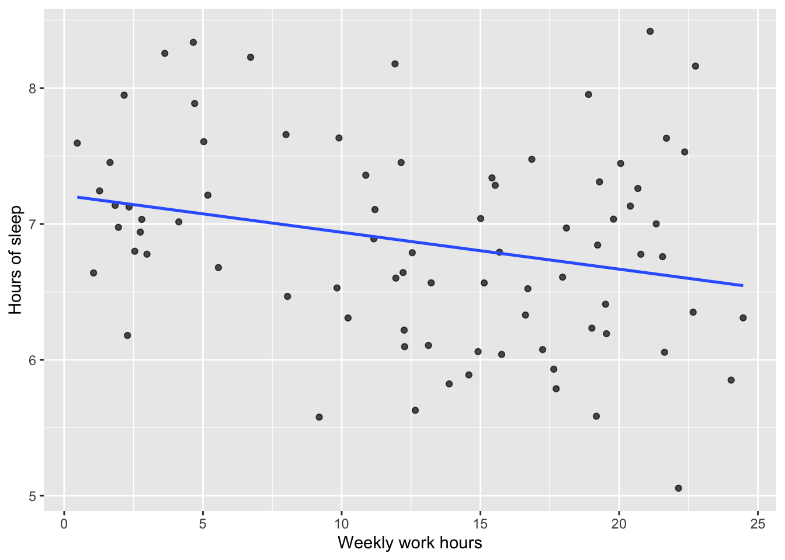

A statistical model is a way to describe how our data might have been generated.
First, we say what random quantities we care about. These include:
the random variables we can actually observe (like test scores in our sample), and
sometimes random quantities we cannot observe directly but imagine could exist (like future scores or population values).
Second, we specify a probability distribution (or a family of possible distributions) that could describe these observable random variables. For example, we might assume scores are roughly Normal with some unknown mean and variance.
Third, we identify the unknown pieces of that distribution, called parameters (such as the mean μ and standard deviation σ). These are the parts we want to learn about from the data.
Finally, sometimes we also put a probability distribution on the parameters themselves. This is what we do in Bayesian statistics: we treat the parameters as random and describe our prior beliefs about them with a distribution.
When we treat the unknown parameter(s) θ as random, we think of:
the distribution of the data “indexed by θ” as
the conditional distribution of the data given θ.
In other words, we imagine: “If the true parameter value were θ, how would the data behave?”
In this chapter we take a first step toward a central idea of this book:
Data are realizations from an underlying process that we describe with a statistical model.
We will use a simple equation to represent this idea,
\[
Y_i = f(x_i) + \epsilon_i,
\]
and we will look at pictures of real and simulated data to see why this viewpoint is useful.
\(Y_i\) is the outcome we observe for unit \(i\).
\(x_i\) is information about unit \(i\), such as group membership or a predictor.
\(f(x_i)\) is the systematic or predictable part of the outcome.
\(\epsilon_i\) is random variation that we do not explain.
Before we write down any formulas for inference, we want to build intuition for what this model based view means in practice.
7.1 Setup
In this chapter we will use R and a few packages for visualization and data manipulation.
7.2 Data, units, variables, and variation
Before we talk about models, we recall some key ideas from earlier chapters.
A unit is one object or individual in the study (a person, a school, a machine, a plot of land).
A variable records some characteristic for each unit (height, weight, test score, treatment group).
A dataset is a collection of measurements on one or more variables for many units.
Variation means that not all units have the same values. Even within a single group, people’s test scores or hours of sleep are not identical.
Models are about describing and explaining this variation in a structured way.
7.3 Story: how much do students sleep
Imagine that you want to understand how much undergraduate students at your university sleep on school nights.
You cannot measure every student, so you take a random sample of \(n = 60\) students and record the number of hours they slept last night.
We will simulate such a dataset to illustrate the ideas. In practice, this would be replaced with real data.
n <-60# Simulate a "true" population: Normal with mean 7, sd 1, truncated to [3, 10]sleep_pop <-rnorm(100000, mean =7, sd =1)sleep_pop <-pmin(pmax(sleep_pop, 3), 10)# Draw a sample of 60 students from this populationsleep_sample <-sample(sleep_pop, size = n, replace =FALSE)sleep_df <-tibble(id =1:n,sleep_hours = sleep_sample)head(sleep_df)
A simple visualization of the sample might be a dotplot or histogram.

Figure 7.1: A dotplot of hours of sleep for 60 sampled students.
In the plot, each dot represents one student. We see variation:
some students report around 5 hours,
many are between 6 and 8 hours,
a few report 9 or more hours.
The plot alone does not answer questions like:
What is the typical number of hours slept in this population
How much do individuals vary around that typical value
If we repeated the sampling, would we see a very different picture
To answer these questions, we introduce a simple model.
7.4 A simple model for one mean
Let \(Y_i\) be the hours of sleep for student \(i\). We want to describe the population using a single number, the mean hours of sleep, which we denote by \(\mu\).
A model based way to write this is
\[
Y_i = \mu + \epsilon_i,
\]
where
\(\mu\) is the population mean hours of sleep,
\(\epsilon_i\) is the deviation of student \(i\) from that mean.
We often assume that the errors \(\epsilon_i\) have mean zero and some spread, and that they follow a distribution that is roughly symmetric. One common choice is a Normal model.
To connect this idea to the plot, we can draw a smooth curve that represents a possible population distribution for hours of sleep, centered at the sample mean and with spread similar to the data.

Figure 7.2: Observed sample (histogram and rug plot) with a smooth density curve representing a possible model for the population distribution.
In this plot:
The bars and rug show the observed sample.
The solid curve shows a smooth estimate of the sample density.
The dashed curve shows a Normal distribution with mean \(\hat{\mu}\) and standard deviation \(\hat{\sigma}\) estimated from the data.
The curves are models: simple mathematical descriptions of a process that could have generated data like this. The dots and bars are data: one realization from that process.
In our model based view:
the curve represents the model,
each observation represents one realization from that model.
Our goal in statistical inference will be to use the observed data to learn about the underlying model, for example the value of \(\mu\).
7.5 Many possible samples from the same model
In practice you only see one sample, but the idea of a model is that it can generate many possible samples.
To make this idea concrete, suppose we take the Normal model with mean \(\hat{\mu}\) and standard deviation \(\hat{\sigma}\) from the previous section as our current best guess for the population. We can ask a computer to simulate several new samples of size \(n = 60\) from this model.

Figure 7.3: Several simulated samples from the same model for hours of sleep. Each panel shows a different sample of 60 students.
Each panel shows a sample of 60 pseudo students generated from the same model. Notice that:
the overall shape in each panel is similar (most values around 7, fewer at the extremes),
the exact bars and sample means differ from panel to panel,
some samples look more lumpy than others.
All of these samples come from the same underlying model. The model is stable; the samples vary.
This visualizes the idea that:
Data are one realization from an underlying data generating process.
Your actual dataset is like one of these panels. You do not know which one in advance, and you never see the others, but thinking in terms of a model helps you reason about what would happen in repeated samples and how much variation to expect.
7.6 Extending the model: adding groups
The previous example treated all students as exchangeable, with a single mean \(\mu\).
Now imagine that you record not only hours of sleep, but also whether each student is in a STEM major or a non STEM major. You might suspect that students in different majors have different sleep patterns.
We can capture this idea by letting the typical hours of sleep depend on a group indicator.
Let
\(x_i = 0\) for non STEM majors,
\(x_i = 1\) for STEM majors.
We write the model
\[
Y_i = \beta_0 + \beta_1 x_i + \epsilon_i.
\]
Here
\(\beta_0\) is the mean hours of sleep for non STEM majors,
\(\beta_1\) is the difference in mean sleep between STEM and non STEM majors,
\(\epsilon_i\) again captures individual deviations from the group mean.
To illustrate, we simulate a dataset with two groups.
n_stem <-35n_nonstem <-45# "True" group means and common sd for illustrationmu_nonstem_true <-7.2mu_stem_true <-6.8sigma_true <-0.9sleep_groups_df <-tibble(major =c(rep("Non-STEM", n_nonstem), rep("STEM", n_stem)),x =if_else(major =="STEM", 1, 0),sleep_hours =c(rnorm(n_nonstem, mean = mu_nonstem_true, sd = sigma_true),rnorm(n_stem, mean = mu_stem_true, sd = sigma_true) ))head(sleep_groups_df)
We can visualize the data by group and overlay the group means implied by the linear model.
(Intercept) x
7.4023859 -0.5838058

Figure 7.4: Hours of sleep by major group. Points show individual students. Horizontal lines show group means from a simple linear model.
The horizontal line in each group represents the model’s group mean:
Non STEM: \(\mu_{ ext{non STEM}} = \beta_0\),
STEM: \(\mu_{ ext{STEM}} = \beta_0 + \beta_1\).
The points are the observed data, which fluctuate around these model summaries.
The question “Is there a difference between the two group means” becomes the model based question “Is \(\beta_1\) equal to zero”
Later, we will see that:
two sample \(t\) tests,
bootstrap intervals for \(\mu_{ ext{STEM}} - \mu_{ ext{non STEM}}\),
Bayesian models for group means,
are all ways of learning about \(\beta_1\) in this simple model.
7.7 Adding a quantitative predictor: simple linear regression
Now consider a quantitative predictor.
Imagine that for each student we record both hours of sleep \(Y_i\) and number of weekly hours spent working at a paid job, \(x_i\). Perhaps students who work more hours sleep less.
A common model is:
\[
Y_i = \beta_0 + \beta_1 x_i + \epsilon_i.
\]
\(\beta_0\) is the intercept: the expected sleep when \(x_i = 0\) (conceptually, a baseline).
\(\beta_1\) is the slope: the expected change in sleep for each additional hour of work per week.
\(\epsilon_i\) is the unexplained variation.
We simulate such data for illustration.
n_reg <-80work_hours <-runif(n_reg, min =0, max =25) # weekly work hoursbeta0_true <-7.5beta1_true <--0.04# small negative associationsigma_reg <-0.7sleep_reg_df <-tibble(work_hours = work_hours,sleep_hours = beta0_true + beta1_true * work_hours +rnorm(n_reg, mean =0, sd = sigma_reg))head(sleep_reg_df)
We fit a simple linear regression model and plot the data with the fitted line.
(Intercept) work_hours
7.2101235 -0.0271345
`geom_smooth()` using formula = 'y ~ x'

Figure 7.5: Sleep versus weekly work hours, with a fitted regression line from the model \(Y_i = \beta_0 + \beta_1 x_i + \epsilon_i\).
Here again we see data (points) and a model (line). The points do not fall exactly on the line; that gap is the error term \(\epsilon_i\). The parameters \(\beta_0\) and \(\beta_1\) describe the systematic part of the relationship between work and sleep.
Later chapters will show how to interpret and perform inference on \(\beta_1\) using frequentist, simulation based, and Bayesian methods.
7.8 The role of \(\epsilon\): unexplained variation and assumptions
In all of these examples, the term \(\epsilon_i\) plays an important role:
It captures individual to individual variation that our model does not explain.
It allows the model to be flexible: not everyone with the same \(x_i\) has the same \(Y_i\).
In many classical models we will assume that:
the \(\epsilon_i\) are independent,
they have mean zero,
they have the same variance \(\sigma^2\) for all \(i\),
and sometimes that they follow a Normal distribution.
These assumptions are simplifications that make it possible to develop mathematical results and to use standard procedures. Later chapters will:
show how to check these assumptions with residual plots and diagnostics,
explore nonparametric and robust methods when assumptions are doubtful,
and show how Bayesian models can relax or modify some of these assumptions.
For now, it is enough to keep in mind:
The error term \(\epsilon_i\) is where randomness lives.
The parameters in \(f(x_i)\) are what we want to learn about.
7.9 Frequentist, simulation based, and Bayesian views of the same model
The equation
\[
Y_i = f(x_i) + \epsilon_i
\]
is the same in all three paradigms we will study:
Frequentist view
The parameters inside \(f\) (such as \(\mu\), \(\beta_0\), \(\beta_1\)) are fixed but unknown.
The randomness comes from the data (from the \(\epsilon_i\)).
We study long run properties of procedures (confidence intervals, hypothesis tests).
Simulation based view
We use the computer to mimic repeated sampling from the model or from the data.
We approximate the sampling distribution of statistics by resampling (bootstrap) or randomization.
This gives us approximate intervals and p values without relying entirely on formulas.
Bayesian view
We place a probability distribution (a prior) on the unknown parameters inside \(f\).
The data update this prior to a posterior distribution via the likelihood implied by the model.
We make probability statements about parameters and predictions based on the posterior.
The model itself does not change. What changes is:
how we treat the unknown parameters, and
how we define and measure uncertainty.
Later, when we reach chapters such as “Inference for One Population Mean” and “Inference for Two Means,” you will see all three perspectives applied to the same model.
7.10 Why a model based approach is helpful
There are two main reasons we take this model based approach from the beginning.
7.10.1 Unification of topics
Many traditional courses present:
one sample \(t\) tests,
two sample \(t\) tests,
ANOVA,
simple regression,
as different procedures with different formulas and conditions. In this book, these all become special cases of linear models built from the same template \(Y = f(x) + \epsilon\).
This helps you see connections:
ANOVA is regression with categorical predictors.
Two sample tests are ANOVA with two groups.
Regression is an extension of these ideas, not a completely new topic.
7.10.2 Better match to modern practice
In applied statistics and data science, analysts almost always begin by specifying a model for how the data might have been generated, then use software to fit the model and summarize uncertainty.
By thinking in terms of models from the start, you will be better prepared to:
understand the output of statistical software,
extend basic ideas to more complex models later,
read research papers that use regression, generalized linear models, and Bayesian methods.
7.11 Summary and looking ahead
In this chapter we:
introduced the model based template \(Y_i = f(x_i) + \epsilon_i\),
saw how one sample, two sample, and regression problems can all be written in this form,
used graphics to distinguish between data (dots, bars, points) and models (curves, lines),
discussed the role of the error term \(\epsilon_i\) and basic assumptions,
and previewed how frequentist, simulation based, and Bayesian methods all work with the same model but treat parameters and uncertainty differently.
In the next part of the book we will study randomness and data generating processes. We will learn about probability, random variables, and sampling distributions, which provide the foundation for understanding why our inferential methods work and how they relate to the model based view introduced here.